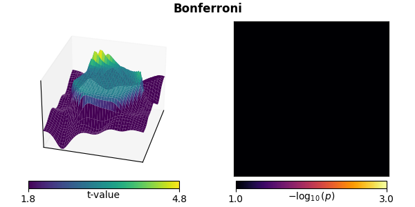

Note
Go to the end to download the full example code.
Statistical inference#
Here we will briefly cover multiple concepts of inferential statistics in an introductory manner, and demonstrate how to use some MNE statistical functions.
# Authors: Eric Larson <larson.eric.d@gmail.com>
#
# License: BSD-3-Clause
# Copyright the MNE-Python contributors.
from functools import partial
import matplotlib.pyplot as plt
import numpy as np
from mpl_toolkits.mplot3d import Axes3D # noqa: F401, analysis:ignore
from scipy import stats
import mne
from mne.stats import (
bonferroni_correction,
fdr_correction,
permutation_cluster_1samp_test,
permutation_t_test,
ttest_1samp_no_p,
)
Hypothesis testing#
Null hypothesis#
From Wikipedia:
In inferential statistics, a general statement or default position that there is no relationship between two measured phenomena, or no association among groups.
We typically want to reject a null hypothesis with some probability (e.g., p < 0.05). This probability is also called the significance level \(\alpha\). To think about what this means, let’s follow the illustrative example from [1] and construct a toy dataset consisting of a 40 × 40 square with a “signal†present in the center with white noise added and a Gaussian smoothing kernel applied.
width = 40
n_subjects = 10
signal_mean = 100
signal_sd = 100
noise_sd = 0.01
gaussian_sd = 5
sigma = 1e-3 # sigma for the "hat" method
n_permutations = "all" # run an exact test
n_src = width * width
# For each "subject", make a smoothed noisy signal with a centered peak
rng = np.random.RandomState(2)
X = noise_sd * rng.randn(n_subjects, width, width)
# Add a signal at the center
X[:, width // 2, width // 2] = signal_mean + rng.randn(n_subjects) * signal_sd
# Spatially smooth with a 2D Gaussian kernel
size = width // 2 - 1
gaussian = np.exp(-(np.arange(-size, size + 1) ** 2 / float(gaussian_sd**2)))
for si in range(X.shape[0]):
for ri in range(X.shape[1]):
X[si, ri, :] = np.convolve(X[si, ri, :], gaussian, "same")
for ci in range(X.shape[2]):
X[si, :, ci] = np.convolve(X[si, :, ci], gaussian, "same")
The data averaged over all subjects looks like this:
In this case, a null hypothesis we could test for each voxel is:
There is no difference between the mean value and zero (\(H_0 \colon \mu = 0\)).
The alternative hypothesis, then, is that the voxel has a non-zero mean (\(H_1 \colon \mu \neq 0\)). This is a two-tailed test because the mean could be less than or greater than zero, whereas a one-tailed test would test only one of these possibilities, i.e. \(H_1 \colon \mu \geq 0\) or \(H_1 \colon \mu \leq 0\).
Note
Here we will refer to each spatial location as a “voxel”. In general, though, it could be any sort of data value, including cortical vertex at a specific time, pixel in a time-frequency decomposition, etc.
Parametric tests#
Let’s start with a paired t-test, which is a standard test for differences in paired samples. Mathematically, it is equivalent to a 1-sample t-test on the difference between the samples in each condition. The paired t-test is parametric because it assumes that the underlying sample distribution is Gaussian, and is only valid in this case. This happens to be satisfied by our toy dataset, but is not always satisfied for neuroimaging data.
In the context of our toy dataset, which has many voxels (\(40 \cdot 40 = 1600\)), applying the paired t-test is called a mass-univariate approach as it treats each voxel independently.
titles = ["t"]
out = stats.ttest_1samp(X, 0, axis=0)
ts = [out[0]]
ps = [out[1]]
mccs = [False] # these are not multiple-comparisons corrected
def plot_t_p(t, p, title, mcc, axes=None):
if axes is None:
fig = plt.figure(figsize=(6, 3), layout="constrained")
axes = [fig.add_subplot(121, projection="3d"), fig.add_subplot(122)]
show = True
else:
show = False
# calculate critical t-value thresholds (2-tailed)
p_lims = np.array([0.1, 0.001])
df = n_subjects - 1 # degrees of freedom
t_lims = stats.distributions.t.ppf(1 - p_lims / 2, df=df)
p_lims = [-np.log10(p) for p in p_lims]
# t plot
x, y = np.mgrid[0:width, 0:width]
surf = axes[0].plot_surface(
x,
y,
np.reshape(t, (width, width)),
rstride=1,
cstride=1,
linewidth=0,
vmin=t_lims[0],
vmax=t_lims[1],
cmap="viridis",
)
axes[0].set(
xticks=[], yticks=[], zticks=[], xlim=[0, width - 1], ylim=[0, width - 1]
)
axes[0].view_init(30, 15)
cbar = axes[0].figure.colorbar(
ax=axes[0],
shrink=0.75,
orientation="horizontal",
fraction=0.1,
pad=0.025,
mappable=surf,
)
cbar.set_ticks(t_lims)
cbar.set_ticklabels([f"{t_lim:0.1f}" for t_lim in t_lims])
cbar.set_label("t-value")
cbar.ax.get_xaxis().set_label_coords(0.5, -0.3)
if not show:
axes[0].set(title=title)
if mcc:
axes[0].title.set_weight("bold")
# p plot
use_p = -np.log10(np.reshape(np.maximum(p, 1e-5), (width, width)))
img = axes[1].imshow(
use_p, cmap="inferno", vmin=p_lims[0], vmax=p_lims[1], interpolation="nearest"
)
axes[1].set(xticks=[], yticks=[])
cbar = axes[1].figure.colorbar(
ax=axes[1],
shrink=0.75,
orientation="horizontal",
fraction=0.1,
pad=0.025,
mappable=img,
)
cbar.set_ticks(p_lims)
cbar.set_ticklabels([f"{p_lim:0.1f}" for p_lim in p_lims])
cbar.set_label(r"$-\log_{10}(p)$")
cbar.ax.get_xaxis().set_label_coords(0.5, -0.3)
if show:
text = fig.suptitle(title)
if mcc:
text.set_weight("bold")
plot_t_p(ts[-1], ps[-1], titles[-1], mccs[-1])

“Hat†variance adjustment#
The “hat†technique regularizes the variance values used in the t-test calculation [1] to compensate for implausibly small variances.
Non-parametric tests#
Instead of assuming an underlying Gaussian distribution, we could instead use a non-parametric resampling method. In the case of a paired t-test between two conditions A and B, which is mathematically equivalent to a one-sample t-test between the difference in the conditions A-B, under the null hypothesis we have the principle of exchangeability. This means that, if the null is true, we can exchange conditions and not change the distribution of the test statistic.
When using a paired t-test, exchangeability thus means that we can flip the signs of the difference between A and B. Therefore, we can construct the null distribution values for each voxel by taking random subsets of samples (subjects), flipping the sign of their difference, and recording the absolute value of the resulting statistic (we record the absolute value because we conduct a two-tailed test). The absolute value of the statistic evaluated on the veridical data can then be compared to this distribution, and the p-value is simply the proportion of null distribution values that are smaller.
Warning
In the case of a true one-sample t-test, i.e. analyzing a single condition rather than the difference between two conditions, it is not clear where/how exchangeability applies; see this FieldTrip discussion.
In the case where n_permutations is large enough (or “all”) so
that the complete set of unique resampling exchanges can be done
(which is \(2^{N_{samp}}-1\) for a one-tailed and
\(2^{N_{samp}-1}-1\) for a two-tailed test, not counting the
veridical distribution), instead of randomly exchanging conditions
the null is formed from using all possible exchanges. This is known
as a permutation test (or exact test).
# Here we have to do a bit of gymnastics to get our function to do
# a permutation test without correcting for multiple comparisons:
X.shape = (n_subjects, n_src) # flatten the array for simplicity
titles.append("Permutation")
ts.append(np.zeros(width * width))
ps.append(np.zeros(width * width))
mccs.append(False)
for ii in range(n_src):
t, p = permutation_t_test(X[:, [ii]], verbose=False)[:2]
ts[-1][ii], ps[-1][ii] = t[0], p[0]
plot_t_p(ts[-1], ps[-1], titles[-1], mccs[-1])
Multiple comparisons#
So far, we have done no correction for multiple comparisons. This is potentially problematic for these data because there are \(40 \cdot 40 = 1600\) tests being performed. If we use a threshold p < 0.05 for each individual test, we would expect many voxels to be declared significant even if there were no true effect. In other words, we would make many type I errors (adapted from here):
Null hypothesis |
|||
|---|---|---|---|
True |
False |
||
Reject |
Yes |
|
|
No |
|
|
|
To see why, consider a standard \(\alpha = 0.05\). For a single test, our probability of making a type I error is 0.05. The probability of making at least one type I error in \(N_{\mathrm{test}}\) independent tests is then given by \(1 - (1 - \alpha)^{N_{\mathrm{test}}}\):
N = np.arange(1, 80)
alpha = 0.05
p_type_I = 1 - (1 - alpha) ** N
fig, ax = plt.subplots(figsize=(4, 3), layout="constrained")
ax.scatter(N, p_type_I, 3)
ax.set(
xlim=N[[0, -1]],
ylim=[0, 1],
xlabel=r"$N_{\mathrm{test}}$",
ylabel="Probability of at least\none type I error",
)
ax.grid(True)
fig.show()
To combat this problem, several methods exist. Typically these provide control over either one of the following two measures:
- Familywise error rate (FWER)
The probability of making one or more type I errors:
\[\mathrm{P}(N_{\mathrm{type\ I}} >= 1 \mid H_0)\]
- False discovery rate (FDR)
The expected proportion of rejected null hypotheses that are actually true:
\[\mathrm{E}(\frac{N_{\mathrm{type\ I}}}{N_{\mathrm{reject}}} \mid N_{\mathrm{reject}} > 0) \cdot \mathrm{P}(N_{\mathrm{reject}} > 0 \mid H_0)\]
We cover some techniques that control FWER and FDR below.
Bonferroni correction#
Perhaps the simplest way to deal with multiple comparisons, Bonferroni correction conservatively multiplies the p-values by the number of comparisons to control the FWER.
False discovery rate (FDR) correction#
Typically FDR is performed with the Benjamini-Hochberg procedure, which is less restrictive than Bonferroni correction for large numbers of comparisons (fewer type II errors), but provides less strict control of type I errors.
Non-parametric resampling test with a maximum statistic#
Non-parametric resampling tests can also be used to correct for multiple comparisons. In its simplest form, we again do permutations using exchangeability under the null hypothesis, but this time we take the maximum statistic across all voxels in each permutation to form the null distribution. The p-value for each voxel from the veridical data is then given by the proportion of null distribution values that were smaller.
This method has two important features:
It controls FWER.
It is non-parametric. Even though our initial test statistic (here a 1-sample t-test) is parametric, the null distribution for the null hypothesis rejection (the mean value across subjects is indistinguishable from zero) is obtained by permutations. This means that it makes no assumptions of Gaussianity (which do hold for this example, but do not in general for some types of processed neuroimaging data).
Clustering#
Each of the aforementioned multiple comparisons corrections have the disadvantage of not fully incorporating the correlation structure of the data, namely that points close to one another (e.g., in space or time) tend to be correlated. However, by defining the adjacency (or “neighbor”) structure in our data, we can use clustering to compensate.
To use this, we need to rethink our null hypothesis. Instead of thinking about a null hypothesis about means per voxel (with one independent test per voxel), we consider a null hypothesis about sizes of clusters in our data, which could be stated like:
The distribution of spatial cluster sizes observed in two experimental conditions are drawn from the same probability distribution.
Here we only have a single condition and we contrast to zero, which can be thought of as:
The distribution of spatial cluster sizes is independent of the sign of the data.
In this case, we again do permutations with a maximum statistic, but, under each permutation, we:
Compute the test statistic for each voxel individually.
Threshold the test statistic values.
Cluster voxels that exceed this threshold (with the same sign) based on adjacency.
Retain the size of the largest cluster (measured, e.g., by a simple voxel count, or by the sum of voxel t-values within the cluster) to build the null distribution.
After doing these permutations, the cluster sizes in our veridical data are compared to this null distribution. The p-value associated with each cluster is again given by the proportion of smaller null distribution values. This can then be subjected to a standard p-value threshold (e.g., p < 0.05) to reject the null hypothesis (i.e., find an effect of interest).
This reframing to consider cluster sizes rather than individual means maintains the advantages of the standard non-parametric permutation test – namely controlling FWER and making no assumptions of parametric data distribution. Critically, though, it also accounts for the correlation structure in the data – which in this toy case is spatial but in general can be multidimensional (e.g., spatio-temporal) – because the null distribution will be derived from data in a way that preserves these correlations.
However, there is a drawback. If a cluster significantly deviates from the null, no further inference on the cluster (e.g., peak location) can be made, as the entire cluster as a whole is used to reject the null. Moreover, because the test statistic concerns the full data, the null hypothesis (and our rejection of it) refers to the structure of the full data. For more information, see also the comprehensive FieldTrip tutorial.
Defining the adjacency matrix#
First we need to define our adjacency (sometimes called “neighbors”) matrix.
This is a square array (or sparse matrix) of shape (n_src, n_src) that
contains zeros and ones to define which spatial points are neighbors, i.e.,
which voxels are adjacent to each other. In our case this
is quite simple, as our data are aligned on a rectangular grid.
Let’s pretend that our data were smaller – a 3 × 3 grid. Thinking about each voxel as being connected to the other voxels it touches, we would need a 9 × 9 adjacency matrix. The first row of this matrix contains the voxels in the flattened data that the first voxel touches. Since it touches the second element in the first row and the first element in the second row (and is also a neighbor to itself), this would be:
[1, 1, 0, 1, 0, 0, 0, 0, 0]
sklearn.feature_extraction provides a convenient function for this:
from sklearn.feature_extraction.image import grid_to_graph # noqa: E402
mini_adjacency = grid_to_graph(3, 3).toarray()
assert mini_adjacency.shape == (9, 9)
print(mini_adjacency[0])
[1 1 0 1 0 0 0 0 0]
In general the adjacency between voxels can be more complex, such as those between sensors in 3D space, or time-varying activation at brain vertices on a cortical surface. MNE provides several convenience functions for computing adjacency matrices, for example:
See the Statistics API for a full list.
MNE also ships with numerous built-in channel adjacency matrices from the
FieldTrip project (called “neighbors” there). You can get an overview of
them by using mne.channels.get_builtin_ch_adjacencies():
builtin_ch_adj = mne.channels.get_builtin_ch_adjacencies(descriptions=True)
for adj_name, adj_description in builtin_ch_adj:
print(f"{adj_name}: {adj_description}")
biosemi16: Biosemi 16-electrode cap
biosemi32: Biosemi 32-electrode cap
biosemi64: Biosemi 64-electrode cap
bti148: BTI 148-channel system
bti248: BTI 248-channel system
bti248grad: BTI 248 gradiometer system
ctf151: CTF 151 axial gradiometer
ctf275: CTF 275 axial gradiometer
ctf64: CTF 64 axial gradiometer
easycap128ch-avg:
easycap32ch-avg:
easycap64ch-avg:
easycapM1: Easycap M1
easycapM11: Easycap M11
easycapM14: Easycap M14
easycapM15: Easycap M15
ecog256: ECOG 256channels, average referenced
ecog256bipolar: ECOG 256channels, bipolar referenced
eeg1010_neighb:
elec1005: Standard 10-05 system
elec1010: Standard 10-10 system
elec1020: Standard 10-20 system
itab153: ITAB 153-channel system
itab28: ITAB 28-channel system
KIT-157:
KIT-208:
KIT-NYU-2019:
KIT-UMD-1:
KIT-UMD-2:
KIT-UMD-3:
KIT-UMD-4:
language29ch-avg: MPI for Psycholinguistic: Averaged 29-channel cap
mpi_59_channels: MPI for Psycholinguistic: 59-channel cap
neuromag122cmb: Neuromag122, only combined planar gradiometers
neuromag306cmb: Neuromag306, only combined planar gradiometers
neuromag306mag: Neuromag306, only magnetometers
neuromag306planar: Neuromag306, only planar gradiometers
yokogawa160:
yokogawa440:
These built-in channel adjacency matrices can be loaded via
mne.channels.read_ch_adjacency().
Standard clustering#
Here, since our data are on a grid, we can use adjacency=None to
trigger optimized grid-based code, and run the clustering algorithm.
titles.append("Clustering")
# Reshape data to what is equivalent to (n_samples, n_space, n_time)
X.shape = (n_subjects, width, width)
# Compute threshold from t distribution (this is also the default)
# Here we use a two-tailed test, hence we need to divide alpha by 2.
# Subtracting alpha from 1 guarantees that we get a positive threshold,
# which MNE-Python expects for two-tailed tests.
df = n_subjects - 1 # degrees of freedom
t_thresh = stats.distributions.t.ppf(1 - alpha / 2, df=df)
# run the cluster test
t_clust, clusters, p_values, H0 = permutation_cluster_1samp_test(
X,
n_jobs=None,
threshold=t_thresh,
adjacency=None,
n_permutations=n_permutations,
out_type="mask",
)
# Put the cluster data in a viewable format
p_clust = np.ones((width, width))
for cl, p in zip(clusters, p_values):
p_clust[cl] = p
ts.append(t_clust)
ps.append(p_clust)
mccs.append(True)
plot_t_p(ts[-1], ps[-1], titles[-1], mccs[-1])
stat_fun(H1): min=-3.195526713940576 max=5.1204338596605075
Running initial clustering …
Found 2 clusters
0%| | Permuting : 0/510 [00:00<?, ?it/s]
16%|█▌ | Permuting : 82/510 [00:00<00:00, 2367.59it/s]
32%|███■| Permuting : 161/510 [00:00<00:00, 2345.25it/s]
48%|████▊ | Permuting : 246/510 [00:00<00:00, 2407.26it/s]
65%|██████▌ | Permuting : 334/510 [00:00<00:00, 2462.57it/s]
83%|████████▎ | Permuting : 422/510 [00:00<00:00, 2496.38it/s]
98%|█████████▊| Permuting : 502/510 [00:00<00:00, 2473.51it/s]
100%|██████████| Permuting : 510/510 [00:00<00:00, 2462.93it/s]
“Hat†variance adjustment#
This method can also be used in this context to correct for small variances [1]:
titles.append(r"$\mathbf{C_{hat}}$")
stat_fun_hat = partial(ttest_1samp_no_p, sigma=sigma)
t_hat, clusters, p_values, H0 = permutation_cluster_1samp_test(
X,
n_jobs=None,
threshold=t_thresh,
adjacency=None,
out_type="mask",
n_permutations=n_permutations,
stat_fun=stat_fun_hat,
buffer_size=None,
)
p_hat = np.ones((width, width))
for cl, p in zip(clusters, p_values):
p_hat[cl] = p
ts.append(t_hat)
ps.append(p_hat)
mccs.append(True)
plot_t_p(ts[-1], ps[-1], titles[-1], mccs[-1])

stat_fun(H1): min=-0.04360308801187525 max=3.127369419320333
Running initial clustering …
Found 1 cluster
0%| | Permuting : 0/510 [00:00<?, ?it/s]
32%|███■| Permuting : 161/510 [00:00<00:00, 4577.23it/s]
62%|██████■| Permuting : 316/510 [00:00<00:00, 4590.99it/s]
93%|█████████▎| Permuting : 474/510 [00:00<00:00, 4628.04it/s]
100%|██████████| Permuting : 510/510 [00:00<00:00, 4643.12it/s]
Threshold-free cluster enhancement (TFCE)#
TFCE eliminates the free parameter initial threshold value that
determines which points are included in clustering by approximating
a continuous integration across possible threshold values with a standard
Riemann sum
[2].
This requires giving a starting threshold start and a step
size step, which in MNE is supplied as a dict.
The smaller the step and closer to 0 the start value,
the better the approximation, but the longer it takes.
A significant advantage of TFCE is that, rather than modifying the statistical null hypothesis under test (from one about individual voxels to one about the distribution of clusters in the data), it modifies the data under test while still controlling for multiple comparisons. The statistical test is then done at the level of individual voxels rather than clusters. This allows for evaluation of each point independently for significance rather than only as cluster groups.
titles.append(r"$\mathbf{C_{TFCE}}$")
threshold_tfce = dict(start=0, step=0.2)
t_tfce, _, p_tfce, H0 = permutation_cluster_1samp_test(
X,
n_jobs=None,
threshold=threshold_tfce,
adjacency=None,
n_permutations=n_permutations,
out_type="mask",
)
ts.append(t_tfce)
ps.append(p_tfce)
mccs.append(True)
plot_t_p(ts[-1], ps[-1], titles[-1], mccs[-1])
stat_fun(H1): min=-3.195526713940576 max=5.1204338596605075
Running initial clustering …
Using 26 thresholds from 0.00 to 5.00 for TFCE computation (h_power=2.00, e_power=0.50)
Found 1600 clusters
0%| | Permuting : 0/510 [00:00<?, ?it/s]
1%| | Permuting : 6/510 [00:00<00:02, 173.53it/s]
3%|▎ | Permuting : 13/510 [00:00<00:02, 191.04it/s]
4%|▍ | Permuting : 20/510 [00:00<00:02, 197.01it/s]
5%|▍ | Permuting : 25/510 [00:00<00:02, 184.06it/s]
6%|▌ | Permuting : 31/510 [00:00<00:02, 182.22it/s]
7%|▋ | Permuting : 37/510 [00:00<00:02, 181.50it/s]
9%|▊ | Permuting : 44/510 [00:00<00:02, 185.25it/s]
10%|▉ | Permuting : 49/510 [00:00<00:02, 179.84it/s]
11%|█ | Permuting : 55/510 [00:00<00:02, 179.66it/s]
12%|█■| Permuting : 60/510 [00:00<00:02, 175.77it/s]
13%|█▎ | Permuting : 66/510 [00:00<00:02, 175.84it/s]
14%|█■| Permuting : 73/510 [00:00<00:02, 179.32it/s]
16%|█▌ | Permuting : 81/510 [00:00<00:02, 184.90it/s]
17%|█▋ | Permuting : 88/510 [00:00<00:02, 187.15it/s]
18%|█▊ | Permuting : 94/510 [00:00<00:02, 186.32it/s]
20%|█▉ | Permuting : 100/510 [00:00<00:02, 185.59it/s]
21%|██ | Permuting : 106/510 [00:00<00:02, 184.81it/s]
22%|██■| Permuting : 113/510 [00:00<00:02, 186.73it/s]
23%|██▎ | Permuting : 119/510 [00:00<00:02, 185.74it/s]
25%|██■| Permuting : 125/510 [00:00<00:02, 185.18it/s]
26%|██▌ | Permuting : 131/510 [00:00<00:02, 184.66it/s]
27%|██▋ | Permuting : 137/510 [00:00<00:02, 184.20it/s]
28%|██▊ | Permuting : 143/510 [00:00<00:01, 183.60it/s]
29%|██▉ | Permuting : 149/510 [00:00<00:01, 183.24it/s]
30%|███ | Permuting : 155/510 [00:00<00:01, 182.63it/s]
32%|███■| Permuting : 162/510 [00:00<00:01, 184.34it/s]
33%|███▎ | Permuting : 168/510 [00:00<00:01, 183.95it/s]
34%|███■| Permuting : 174/510 [00:00<00:01, 183.59it/s]
35%|███▌ | Permuting : 180/510 [00:00<00:01, 183.10it/s]
36%|███▋ | Permuting : 186/510 [00:01<00:01, 182.81it/s]
37%|███▋ | Permuting : 191/510 [00:01<00:01, 180.41it/s]
39%|███▉ | Permuting : 198/510 [00:01<00:01, 182.11it/s]
40%|████ | Permuting : 204/510 [00:01<00:01, 181.88it/s]
41%|████■| Permuting : 211/510 [00:01<00:01, 183.45it/s]
43%|████▎ | Permuting : 217/510 [00:01<00:01, 183.03it/s]
44%|████▎ | Permuting : 222/510 [00:01<00:01, 180.99it/s]
45%|████■| Permuting : 227/510 [00:01<00:01, 178.88it/s]
46%|████▌ | Permuting : 234/510 [00:01<00:01, 180.58it/s]
47%|████▋ | Permuting : 240/510 [00:01<00:01, 180.46it/s]
48%|████▊ | Permuting : 246/510 [00:01<00:01, 180.30it/s]
49%|████▉ | Permuting : 252/510 [00:01<00:01, 180.09it/s]
50%|█████ | Permuting : 257/510 [00:01<00:01, 178.33it/s]
52%|█████■| Permuting : 264/510 [00:01<00:01, 179.77it/s]
53%|█████▎ | Permuting : 269/510 [00:01<00:01, 178.05it/s]
54%|█████■| Permuting : 276/510 [00:01<00:01, 179.71it/s]
55%|█████▌ | Permuting : 282/510 [00:01<00:01, 179.64it/s]
57%|█████▋ | Permuting : 290/510 [00:01<00:01, 182.81it/s]
58%|█████▊ | Permuting : 298/510 [00:01<00:01, 185.52it/s]
60%|█████▉ | Permuting : 304/510 [00:01<00:01, 185.07it/s]
61%|██████ | Permuting : 309/510 [00:01<00:01, 183.11it/s]
62%|██████■| Permuting : 315/510 [00:01<00:01, 182.67it/s]
63%|██████▎ | Permuting : 320/510 [00:01<00:01, 180.84it/s]
64%|██████■| Permuting : 326/510 [00:01<00:01, 180.71it/s]
65%|██████■| Permuting : 331/510 [00:01<00:01, 178.40it/s]
66%|██████▌ | Permuting : 337/510 [00:01<00:00, 178.40it/s]
67%|██████▋ | Permuting : 342/510 [00:01<00:00, 176.84it/s]
68%|██████▊ | Permuting : 347/510 [00:01<00:00, 175.36it/s]
69%|██████▉ | Permuting : 353/510 [00:01<00:00, 175.52it/s]
70%|███████ | Permuting : 358/510 [00:01<00:00, 174.11it/s]
71%|███████ | Permuting : 363/510 [00:02<00:00, 172.79it/s]
73%|███████▎ | Permuting : 370/510 [00:02<00:00, 174.61it/s]
74%|███████▎ | Permuting : 376/510 [00:02<00:00, 174.80it/s]
75%|███████■| Permuting : 381/510 [00:02<00:00, 173.12it/s]
76%|███████▌ | Permuting : 386/510 [00:02<00:00, 171.86it/s]
77%|███████▋ | Permuting : 392/510 [00:02<00:00, 172.19it/s]
78%|███████▊ | Permuting : 397/510 [00:02<00:00, 170.97it/s]
79%|███████▉ | Permuting : 402/510 [00:02<00:00, 169.82it/s]
80%|████████ | Permuting : 409/510 [00:02<00:00, 171.69it/s]
81%|████████■| Permuting : 415/510 [00:02<00:00, 172.05it/s]
83%|████████▎ | Permuting : 422/510 [00:02<00:00, 173.86it/s]
84%|████████■| Permuting : 429/510 [00:02<00:00, 175.24it/s]
85%|████████▌ | Permuting : 436/510 [00:02<00:00, 176.92it/s]
87%|████████▋ | Permuting : 442/510 [00:02<00:00, 177.00it/s]
88%|████████▊ | Permuting : 449/510 [00:02<00:00, 178.59it/s]
90%|████████▉ | Permuting : 457/510 [00:02<00:00, 181.60it/s]
91%|█████████ | Permuting : 464/510 [00:02<00:00, 182.95it/s]
93%|█████████▎| Permuting : 472/510 [00:02<00:00, 185.74it/s]
94%|█████████â–| Permuting : 479/510 [00:02<00:00, 186.13it/s]
95%|█████████▌| Permuting : 486/510 [00:02<00:00, 187.25it/s]
96%|█████████▋| Permuting : 492/510 [00:02<00:00, 186.82it/s]
98%|█████████▊| Permuting : 499/510 [00:02<00:00, 187.90it/s]
99%|█████████▉| Permuting : 506/510 [00:02<00:00, 188.93it/s]
100%|██████████| Permuting : 510/510 [00:02<00:00, 190.25it/s]
100%|██████████| Permuting : 510/510 [00:02<00:00, 182.55it/s]
We can also combine TFCE and the “hat†correction:
titles.append(r"$\mathbf{C_{hat,TFCE}}$")
t_tfce_hat, _, p_tfce_hat, H0 = permutation_cluster_1samp_test(
X,
n_jobs=None,
threshold=threshold_tfce,
adjacency=None,
out_type="mask",
n_permutations=n_permutations,
stat_fun=stat_fun_hat,
buffer_size=None,
)
ts.append(t_tfce_hat)
ps.append(p_tfce_hat)
mccs.append(True)
plot_t_p(ts[-1], ps[-1], titles[-1], mccs[-1])
stat_fun(H1): min=-0.04360308801187525 max=3.127369419320333
Running initial clustering …
Using 16 thresholds from 0.00 to 3.00 for TFCE computation (h_power=2.00, e_power=0.50)
Found 1600 clusters
0%| | Permuting : 0/510 [00:00<?, ?it/s]
6%|▌ | Permuting : 31/510 [00:00<00:00, 915.09it/s]
13%|█▎ | Permuting : 66/510 [00:00<00:00, 965.41it/s]
18%|█▊ | Permuting : 93/510 [00:00<00:00, 908.71it/s]
24%|██■| Permuting : 124/510 [00:00<00:00, 911.99it/s]
30%|███ | Permuting : 155/510 [00:00<00:00, 914.08it/s]
37%|███▋ | Permuting : 188/510 [00:00<00:00, 914.44it/s]
43%|████▎ | Permuting : 218/510 [00:00<00:00, 910.74it/s]
49%|████▉ | Permuting : 251/510 [00:00<00:00, 921.00it/s]
55%|█████■| Permuting : 279/510 [00:00<00:00, 909.09it/s]
61%|██████ | Permuting : 312/510 [00:00<00:00, 917.96it/s]
67%|██████▋ | Permuting : 340/510 [00:00<00:00, 908.16it/s]
73%|███████▎ | Permuting : 374/510 [00:00<00:00, 919.06it/s]
79%|███████▉ | Permuting : 404/510 [00:00<00:00, 912.35it/s]
85%|████████▌ | Permuting : 436/510 [00:00<00:00, 916.11it/s]
91%|█████████â–| Permuting : 466/510 [00:00<00:00, 913.80it/s]
97%|█████████▋| Permuting : 493/510 [00:00<00:00, 903.76it/s]
100%|██████████| Permuting : 510/510 [00:00<00:00, 907.13it/s]
100%|██████████| Permuting : 510/510 [00:00<00:00, 908.95it/s]
Visualize and compare methods#
Let’s take a look at these statistics. The top row shows each test statistic, and the bottom shows p-values for various statistical tests, with the ones with proper control over FWER or FDR with bold titles.
The first three columns show the parametric and non-parametric statistics that are not corrected for multiple comparisons:
Mass univariate t-tests result in jagged edges.
“Hat†variance correction of the t-tests produces less peaky edges, correcting for sharpness in the statistic driven by low-variance voxels.
Non-parametric resampling tests are very similar to t-tests. This is to be expected: the data are drawn from a Gaussian distribution, and thus satisfy parametric assumptions.
The next three columns show multiple comparison corrections of the mass univariate tests (parametric and non-parametric). These too conservatively correct for multiple comparisons because neighboring voxels in our data are correlated:
Bonferroni correction eliminates any significant activity.
FDR correction is less conservative than Bonferroni.
A permutation test with a maximum statistic also eliminates any significant activity.
The final four columns show the non-parametric cluster-based permutation tests with a maximum statistic:
Standard clustering identifies the correct region. However, the whole area must be declared significant, so no peak analysis can be done. Also, the peak is broad.
Clustering with “hat†variance adjustment tightens the estimate of significant activity.
Clustering with TFCE allows analyzing each significant point independently, but still has a broadened estimate.
Clustering with TFCE and “hat†variance adjustment tightens the area declared significant (again FWER corrected).
Statistical functions in MNE#
The complete listing of statistical functions provided by MNE are in the Statistics API list, but we will give a brief overview here.
MNE provides several convenience parametric testing functions that can be used in conjunction with the non-parametric clustering methods. However, the set of functions we provide is not meant to be exhaustive.
If the univariate statistical contrast of interest is not listed here
(e.g., interaction term in an unbalanced ANOVA), consider checking out the
statsmodels package. It offers many functions for computing
statistical contrasts, e.g., statsmodels.stats.anova.anova_lm().
To use these functions in clustering:
Determine which test statistic (e.g., t-value, F-value) you would use in a univariate context to compute your contrast of interest. In other words, if there were only a single output such as reaction times, what test statistic might you compute on the data?
Wrap the call to that function within a function that takes an input of the same shape that is expected by your clustering function, and returns an array of the same shape without the “samples†dimension (e.g.,
mne.stats.permutation_cluster_1samp_test()takes an array of shape(n_samples, p, q)and returns an array of shape(p, q)).Pass this wrapped function to the
stat_funargument to the clustering function.Set an appropriate
thresholdvalue (float or dict) based on the values your statistical contrast function returns.
Parametric methods provided by MNE#
mne.stats.ttest_1samp_no_p()Paired t-test, optionally with hat adjustment. This is used by default for contrast enhancement in paired cluster tests.
mne.stats.f_oneway()One-way ANOVA for independent samples. This can be used to compute various F-contrasts. It is used by default for contrast enhancement in non-paired cluster tests.
mne.stats.f_mway_rm()M-way ANOVA for repeated measures and balanced designs. This returns F-statistics and p-values. The associated helper function
mne.stats.f_threshold_mway_rm()can be used to determine the F-threshold at a given significance level.
mne.stats.linear_regression()Compute ordinary least square regressions on multiple targets, e.g., sensors, time points across trials (samples). For each regressor it returns the beta value, t-statistic, and uncorrected p-value. While it can be used as a test, it is particularly useful to compute weighted averages or deal with continuous predictors.
Non-parametric methods#
mne.stats.permutation_cluster_test()Unpaired contrasts with clustering.
mne.stats.spatio_temporal_cluster_test()Unpaired contrasts with spatio-temporal clustering.
mne.stats.permutation_t_test()Paired contrast with no clustering.
mne.stats.permutation_cluster_1samp_test()Paired contrasts with clustering.
mne.stats.spatio_temporal_cluster_1samp_test()Paired contrasts with spatio-temporal clustering.
Warning
In most MNE functions, data has shape
(..., n_space, n_time), where the spatial dimension can
be e.g. sensors or source vertices. But for our spatio-temporal
clustering functions, the spatial dimensions need to be last
for computational efficiency reasons. For example, for
mne.stats.spatio_temporal_cluster_1samp_test(), X
needs to be of shape (n_samples, n_time, n_space). You can
use numpy.transpose() to transpose axes if necessary.
References#
Total running time of the script: (0 minutes 16.285 seconds)